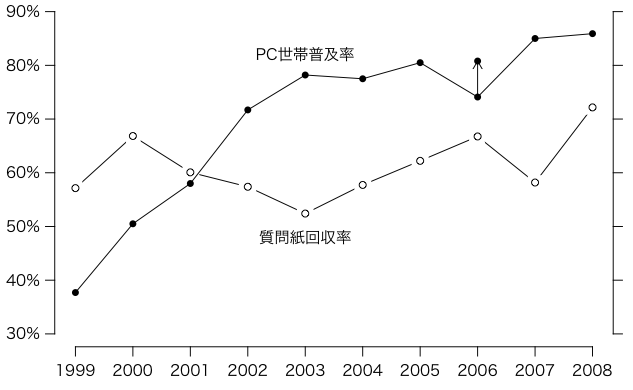

総務省通信利用動向調査は各年末に行われる調査。郵送による調査票の配布及び回収による。
次のPC世帯普及率データは報道発表資料の平成20年度調査（PDF）による。世帯編平成19年度調査（PDF）や平成18年度調査（PDF）によれば2006年度の普及率は80.8%ではなく74.1%になっている。なぜ訂正されたのか不明。グラフをよく見れば，74.1%では異様に凹んでいることがわかる［追記：統計調査データ：正誤情報 の「H21.6.25掲載」にて訂正］。
年 回答数 総数 PC世帯普及率 2008 4515 6256 85.9 2007 3640 6256 85.0 2006 4999 7488 74.1 # → 80.8 2005 3982 6400 80.5 2004 3695 6400 77.5 2003 3354 6400 78.2 2002 3673 6400 71.7 2001 3845 6400 58.0 2000 4278 6400 50.5 1999 3657 6400 37.7
2006年の普及率は，上の表は訂正前の74.1%で，訂正後は80.8%である。
上の表をクリップボードにコピーして，以下のコードを実行する（Mac/Windowsのうち不要なほうは削除する）。
options(encoding="SJIS") # Mac
X = read.table("clipboard", header=TRUE) # Windows
X = read.table(pipe("pbpaste"), header=TRUE) # Mac
par(family="HiraKakuPro-W3") # Mac
par(las=1) # 縦軸の文字を横向きにしない
par(mgp=c(2,0.8,0)) # 軸マージン（デフォルト: c(3,1,0)）
plot(X$年, X$PC世帯普及率, pch=16, type="o", ylim=c(30,90),
xlab="", ylab="", axes=FALSE)
t = 1999:2008
axis(1, t)
t = seq(30, 90, 10)
axis(2, t, paste(t, "%", sep=""))
axis(4, t, labels=FALSE)
arrows(2006, 74.1, 2006, 80.8, 0.1)
points(2006, 80.8, pch=16)
points(X$年, X$回答数/X$総数*100, type="b")
text(2003, 82, "PC世帯普及率")
text(2003, 48, "質問紙回収率")

axes=FALSE
の代わりに
xaxt="n", yaxt="n"
とすれば，PC普及率データ訂正？ | Okumura's Blog
にあるようにグラフ領域が長方形の枠で囲まれる。また，最後の2行の代わりに
legend(2001, 98, pch=c(16,1), legend=c("PC世帯普及率 ","質問紙回収率"),
bty="n", horiz=TRUE, xpd=TRUE)
とすれば，凡例が上マージンに出る。
Last modified: 2009-11-18 13:44:49